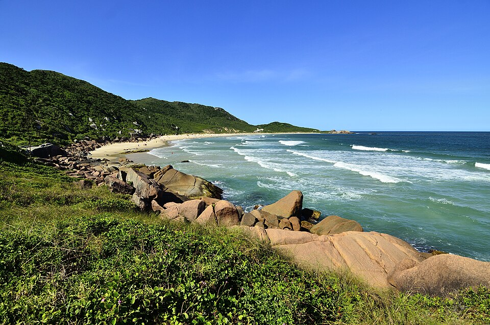
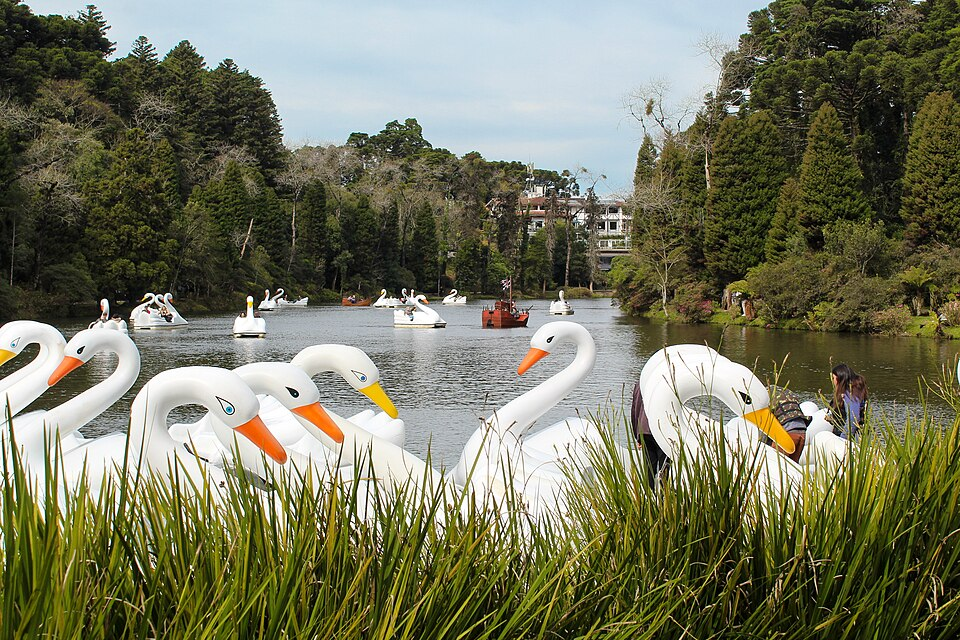
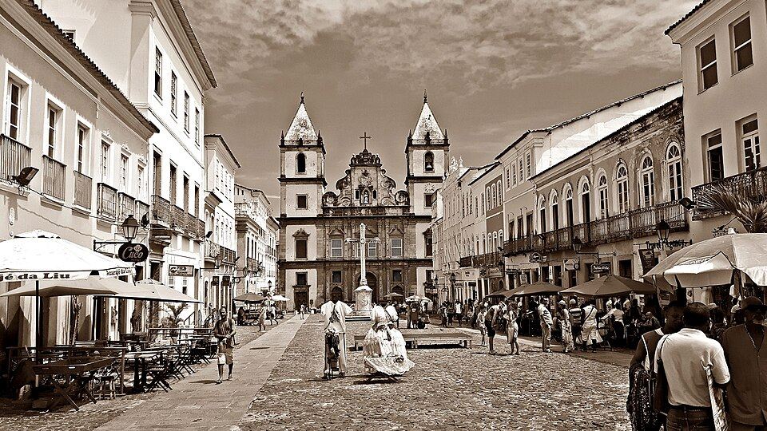

Destinos
Conheça três lugares brasileiros que podem fazer parte da sua próxima viagem.
Florianópolis

Florianópolis possui praias, trilhas e belas paisagens para quem gosta de natureza.
Gramado

Gramado é conhecida pelo clima frio, pela gastronomia e pelos parques bem cuidados.
Salvador

Salvador reúne história, cultura, música e praias em um destino cheio de atrações.